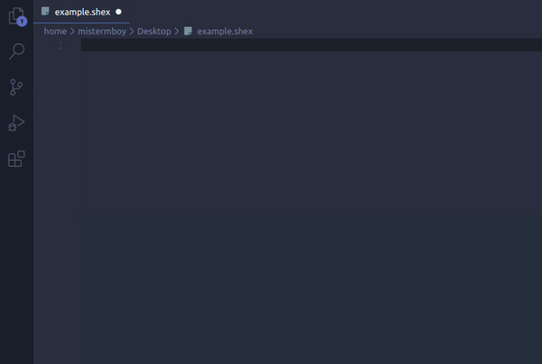

Welcome to VScode ShEx Extensions
Shape Expressions extensions for Visual Studio Code
Shex Languaje Extension
This extension provides highlighting and snippets for Shape Expressions languaje
Installation
Launch VS Code Quick Open (Ctrl+P), paste the following command, and press enter.
$~ ext install PabloMenndez.shex
You can also find the extension in the extensions market simply by typing "shex"
Usage
Once you have installed this extension you will be able to view it features in any .shex file. Since VSCode works with scopes, the file must first be saved with the .shex extension.

Snippets
Currently, the only snippet available is for autocompleting the most common wikidata prefixes.
YASHE Extension
YASHE is a Shape Expressions editor which offers features as syntax highlighting ,error checking and autocompleters. This extension allows YASHE to be used within Visual Studio Code.
Installation
Launch VS Code Quick Open (Ctrl+P), paste the following command, and press enter.
$~ ext install PabloMenndez.yashe
You can also find the extension in the extensions market simply by typing "shex"
Using yashe-extension
Once you have installed the extension, you can easily use YASHE with the following steps:
- Open the Command Pallete(Ctrl+Shift+P)
- Type ShEx or YASHE
- Execute the command called "ShEx: Start YASHE Editor"